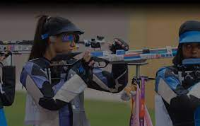
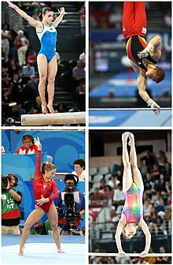
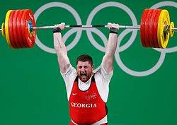
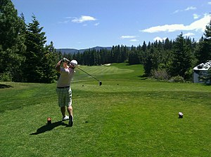

Streljaštvo je sport u koje se korišćenjem različitih tipova pušaka i pištolja gađa u pokretne, nepokretne i leteće mete. Ovaj sport ne treba mešati sa streličarstvom, sportom u kojem je takođe cilj pogoditi metu, ali ovaj put korišćenjem oružja kao što su luk i strela i samostrel. Streljaštvo je standardni sport u programu modernih Olimpijskih igara. ISSF (Svetska sportska streljačka federacija) danas broji preko 160 zemalja članica i spada u najraširenije sportove. Pojedine discipline streljaštva su sastavni delovi višebojskih sportova kao što su biatlon i moderni petoboj.
Gimnastika je sport, čije ime potiče od grčke reči koja označava vežbanje. Ona uključuje izvođenje vežbi koje zahtevaju fizičku snagu, spretnost i koordinaciju. Moderna gimnastika uključuje vežbe na razboju, gredi, parteru, karikama, konju sa hvataljakama i bez njih. Gimnastika se razvila iz vežbi koje su praktikovale u starom veku, kao što uzjahivanje ili silaženje sa konja ili iz cirkuskih nastupa.
Dizanje tegova je olimpijski sport u kome takmičar snagom svojih mišića diže uvis veliku težinu smeštenu na čelične šipke, za šta je potrebna fizička snaga, koncentracija, iskustvo, moć volje, kondicija, tehnika, sve u svemu mentalna i fizička snaga. Izraz „dizanje tegova“ se obično odnosi na samo treniranje za takmičenje; u procesu treninga se jačaju glavne mišićne grupe potrebne za takmičenje, stiče kondicija i priprema srce za veliki napor. Zbog takvih rezultata i mnogi drugi sportisti u svoj trening uključuju slične vežbe. Međutim, ako se neispravno rade, ove vežbe mogu dovesti do teških poremećaja fizičkog zdravlja, pa je potreban iskusan trener i oprezno i postepeno vežbanje. Tehnika je najbitniji aspekat dizanja tegova, jer se bez nje dizač tegova može trajno ozlediti i ne postići očekivane rezultate. Odmor od vežbanja je podjednako bitan.
Golf je sport u kojoj igrač nastoji da golf lopticu sa što manje udaraca ubaci u rupu, u skladu sa pravilima. Golf je nastao u Škotskoj u 14. veku i pretpostavlja se da su prvi igrači bili pastiri koji su na prostranim škotskim pašnjacima čuvali ovce. Kao rupe su im služile zečje jame, a palice su bile od drveta. Igra je do 19. veka imala samo jedan oblik - meč plej. Pobednik na svakoj rupi bio je igrač koji je s najmanjim brojem udaraca uterao lopticu u rupu, a ukupan pobednik je bio igrač koji je pobedio na najviše rupa. Normalno se igra 18 rupa, ili u skraćenoj verziji na 9 rupa. 19. rupa je popularan naziv za bar u klupskoj zgradi.
